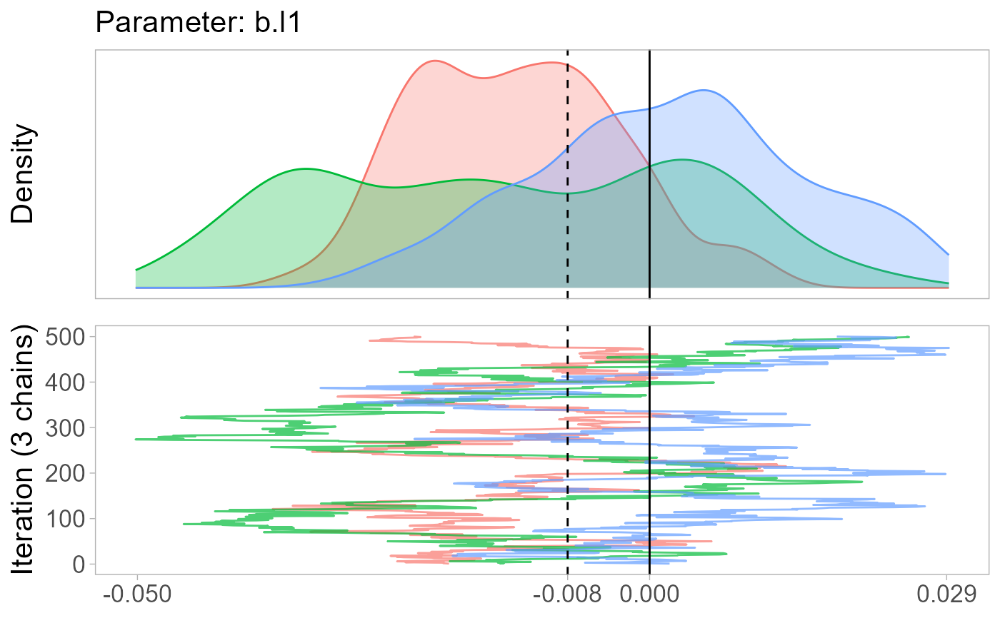

The function rmmmonetPlot creates a density plot of the posterior distribution of your model parameters and the traceplot that led to this density.
monetPlot(rmm, parameter, lab = F, r = 3, sav = F)
| rmm | A rmm object. rmm has to be run with monitor=T |
|---|---|
| parameter | A string with the parameter name. The internal name has to be used, which are the rownames in the rmm reg.table output. |
| lab | String to describe the parameter on the graph's x-axis. Optional. If not specified, the internal parameter name is used. |
| r | Specify number of decimal places. Default equals 3. |
| sav | TRUE or FALSE (default). If |
Returns a plot. The solid vertical is at 0 and the dashed vertical line is the mode of the posterior distributions.
Benjamin Rosche <benjamin.rosche@gmail.com>
data(coalgov) m1 <- rmm(Surv(govdur, earlyterm) ~ 1 + mm(id(pid, gid), mmc(fdep), mmw(w ~ 1/offset(n), constraint=1)) + majority + hm(id=cid, name=cname, type=RE, showFE=F), family="Weibull", monitor=T, data=coalgov)#> module glm loaded#> Compiling model graph #> Resolving undeclared variables #> Allocating nodes #> Graph information: #> Observed stochastic nodes: 581 #> Unobserved stochastic nodes: 843 #> Total graph size: 13386 #> #> Initializing model #>monetPlot(m1, parameter="b.l1")